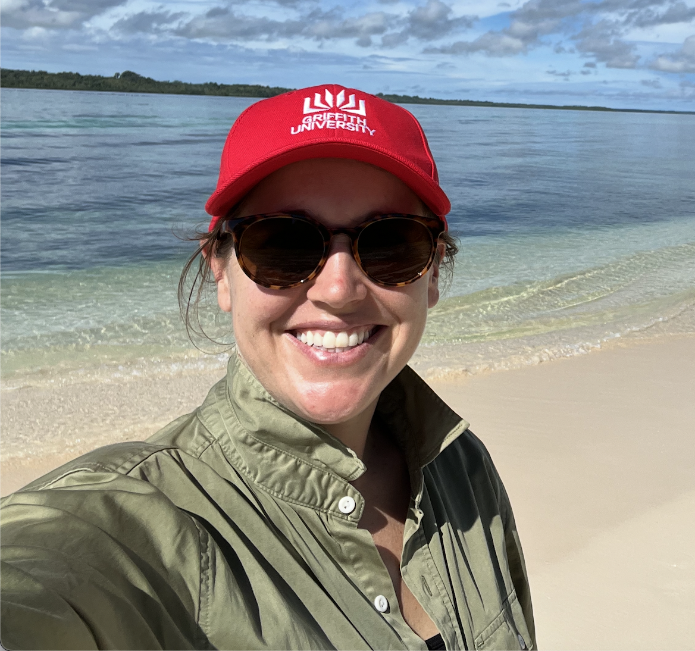
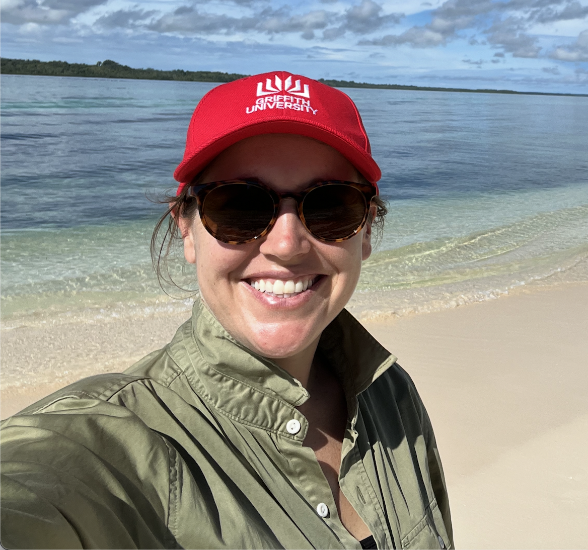
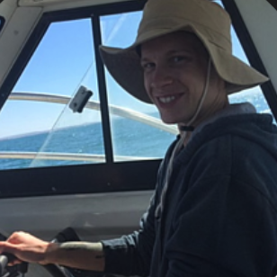
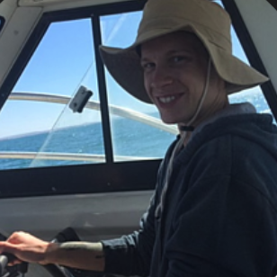
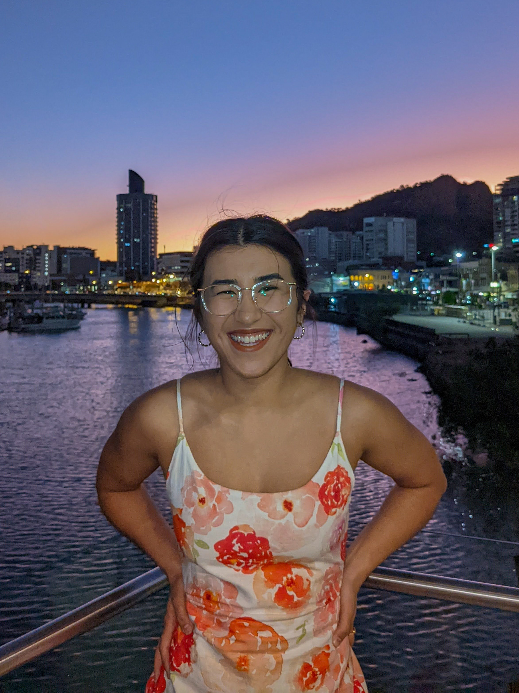
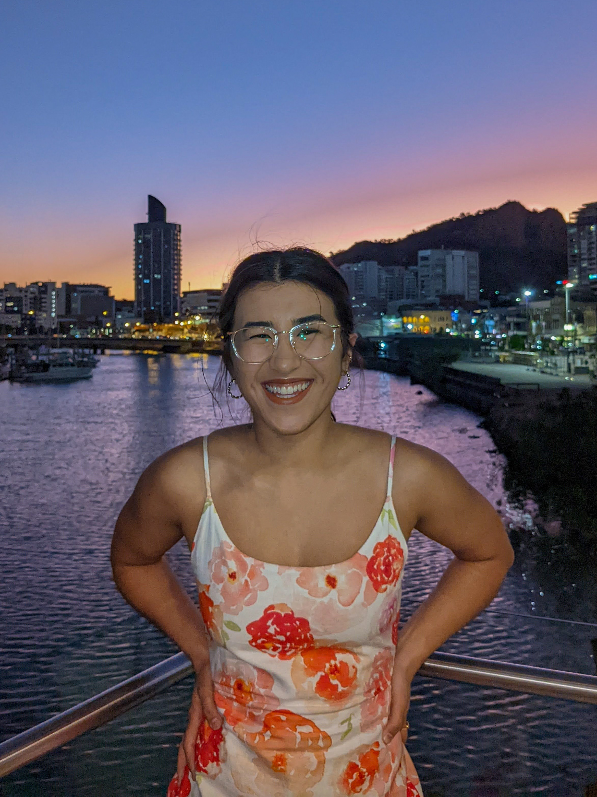

Group Lead
 

Dr Caitie Kuempel
Senior Lecturer
Education
- PhD Conservation Science, University of Queensland
- MSc Marine Ecology, Northeastern University
- B.S. Environmental Science, University of Iowa
- B.A. French, University of Iowa
Biography
Dr Kuempel is a conservation scientist with interests in sustainable seafood, land-sea interactions, and conservation planning. I am passionate about finding ways to meet the needs of the growing human population while minimising impacts on the environment, particularly in the world’s oceans.
Research Staff


Alexandra White
Research Assistant
Education
- BSc Wildlife Biology, Griffith University
Biography
Alexandra is passionate about translating research insights into meaningful narratives that highlight real-world applications. She is currently supporting a wide range of projects in the lab related to sustainable development and conservation.
Students


Marina Christofidis
PhD Candidate
Education
- MSc Environmental Engineering, Federal University of Santa Catarina, Florianopolis, Brazil
- BSc Biological Sciences, University of Brasilia, Brazil
Biography
Marina has been a Federal Employee in Brazil since 2008 as a Water Infrastructure Analyst where she focused on managing the many uses of Coastal Common areas both in land and water by multiple stakeholders. For her PhD thesis, she is exploring climate change impacts on aquaculture in Australia.

Simon Metcher
PhD Student
Education
- BSc (Hons) Environmental Science, Microbiology, Wildlife Biology, Griffith University
Biography
Simon's research is focused on marine conservation and ecosystem modeling, using geospatial data science to assess aquaculture impacts and inform sustainable practices.


Maddie Davey
PhD Candidate
Education
- B.A. (Hons) Political Science and Government, Geosciences, Marine Science
Biography
Maddie is a marine conservation scientist passionate about achieving best practice in marine spatial planning outcomes. Her PhD thesis is based on the University of Queensalnd focusing on improving metrics and data in marine spatial planning, particularly on coral reefs. She also is a spatial analyst and consultant for the Centre for Conservation Geography.
Ainsley Leaning
PhD Student
Education
- MSc (Hons) Marine Science, Griffith University
- B.S. (Distinction) Marine Science, Griffith University
Biography
Ainsley is a PhD student with the Blue Economy Cooperative Research Centre. Her project aims to develop methods that harness the power of hydroacoustic instruments (echosounders) to provide better ecological information for use in marine spatial planning (MSP).
Alumni
 

Dr Jackson Stockbridge
Post-doctoral Fellow
Education
- PhD Environmental Science, University of Adelaide
- BSc Science (Hons) Marine and Evolutionary Biology
Biography
Jackson was a post-doctoral research on the Blue Economy Cooperative Research Centre Marine Spatial Planning project, focusing on cumulative impacts of offshore wind. He is currently a post-doctoral researcher at Griffith University looking at water quality and food systems impacts.
 

Jade Arnold
Masters Student
Education
- MSc (Hons) Marine Conservation, Griffith University
- BAdvSc Marine Biology, James Cook University
Biography
Jade completed her Masters degree in 2024 looking at human impacts within and conservation effectiveness of Australia's marine protected area network. She is currently an Aquarist specialisin gin invertebrates and education.


Emma Arnett
Masters student
Education
- MSc Environmental Management, University of Queensland
- BS Marine Biology, University of Queensland
Biography
Emma completed her masters degree in 2021 on the environmental efficiency of seafood trade globally. She now works at the Queensland Department of Environment, Tourism, Science, and Innovation.
Alana McPherson
Honours
Education
- B.S. (Hons) Environmental Science, Griffith University
Biography
Alana completed her Honours degree in 2023 looking at the effectiveness of Australia's marine protected area network through time. She currently works as a Health Technician at Clean Seas Sustainbale Seafood in South Australia.